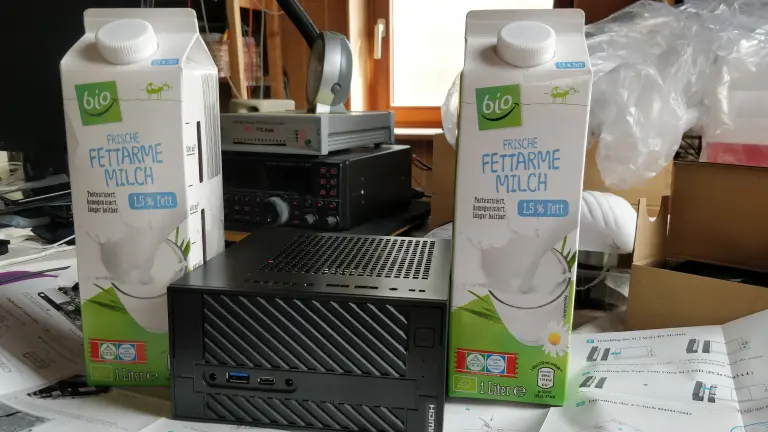

, 5 min read
Comparing Self-Hosting vs. Hashnode vs. Bearblog
Original post is here eklausmeier.goip.de/blog/2023/05-31-comparing-self-hosting-vs-hashnode-vs-bearblog.
1. Current state of affairs. Blog post for this blog are written in Markdown with some frontmatter. I can use any editor of my liking. Once I am done with the writing, I run Simplified Saaze on the Markdown files, then deploy the generated HTML files with a shell script to my web-server, Hiawatha in my case. This is my web-server:

Running Simplified Saaze and the deploy-script is quite quick:
$ time php saaze -mortb /tmp/build
Building static site in /tmp/build...
execute(): filePath=/home/klm/php/sndsaaze/content/aux.yml, nentries=5, totalPages=1, entries_per_page=20
execute(): filePath=/home/klm/php/sndsaaze/content/blog.yml, nentries=400, totalPages=20, entries_per_page=20
execute(): filePath=/home/klm/php/sndsaaze/content/gallery.yml, nentries=5, totalPages=1, entries_per_page=20
execute(): filePath=/home/klm/php/sndsaaze/content/music.yml, nentries=53, totalPages=3, entries_per_page=20
execute(): filePath=/home/klm/php/sndsaaze/content/error.yml, nentries=1, totalPages=1, entries_per_page=20
Finished creating 5 collections, 4 with index, and 480 entries (0.13 secs / 10.4MB)
#collections=5, YamlParser=0.0069/488-5, md2html=0.0125, MathParser=0.0071/480, renderEntry=480, content=480/0, excerpt=0/0
real 0.16s
user 0.12s
sys 0
swapped 0
total space 0
$ time blogdeploy -p
$#=0
BUILD=/tmp/build
CDIRS=aux blog music gallery
PHPSEARCH=1
SAAZEROOT=/home/klm/php/sndsaaze
DOCROOT=/srv/http
$*=
real 0.06s
user 0.02s
sys 0
swapped 0
total space 0
By and large I am completely happy with this setup. Still, I am evaluating options to "get rid" of the self-hosting. I have written on some options regarding this:
- Hosting Static Content with surge.sh: surge.sh is quite slow and probably not a good option. It is good for having a kind of backup or insurance against vandalism from Microsoft.
- Hosting Static Content with now.sh, this is Vercel, a good option; download limit of 100GB per month
- Hosting Static Content with netlify.app, also a good option; download limit of 100GB per month
- Hosting Static Content with Cloudflare, probably the best option so far
In all above cases I would keep Simplified Saaze and all my Markdown files.
2. Alternatives and speed tests. Other options to host my posts would be to use either
- Hashnode, although its import capabilities are somewhat restricted, see Hashnode Markdown Bulk Import Is Troublesome. Also, as we will see here, it is quite slow.
- Bearblog, a very recent blog provider, currently still lacking crucial features like MathJax and a Markdown importer. It is easy to use and the fastest contender so far.
Measuring the post "Calling MD4C from PHP via FFI" with tools.pingdom.com using San Francisco as location. This location clearly penalizes my self-hosting, as my host is located in Frankfurt (Main), Germany. Distance between Frankfurt and San Francisco is roughly 10,000 km. Light would at least need 33ms to travel this distance in one direction. Add to this that multiple hops are in between, and HTTPS handshaking takes three rounds, making six travels. This adds at least 200ms. Below picture shows various submarine cables connecting Europe with the Americas.
I have identical copies of this article on all platforms.
- Bearblog: Calling MD4C from PHP via FFI
- Self-host: Calling MD4C from PHP via FFI
- Hashnode: Calling MD4C from PHP via FFI
| Blog | Performance grade | Page size in KB | Load time in s | Requests |
|---|---|---|---|---|
| Bearblog | 97 | 10.4 | 0.518 | 2 |
| self-host | 99 | 45.7 | 1.370 | 3 |
| Hashnode | 79 | 2,100.0 | 0.995 | 31 |
Above measurements show that Bearblog is doing a particular good job at providing fast access to the desired content. Hashnode, instead, is more than 200-times as big as Bearblog and needs more than 15-times more requests. Unsurprisingly, Pingdom grades Hashnode way worse than Bearblog.
Same posts, this time measured from location Frankfurt.
| Blog | Performance grade | Page size in KB | Load time in s | Requests |
|---|---|---|---|---|
| Bearblog | 97 | 10.4 | 0.611 | 2 |
| self-host | 99 | 45.7 | 0.258 | 3 |
| Hashnode | 78 | 2,100.0 | 2.190 | 33 |
This time self-hosting is the best option, even though the self-hosted page size is four times as big as the page size from Bearblog. Hashnode is showing severe deficiencies: loading a simple web page and needing more than 2 seconds is clearly not good.
3. Features. Comparing features of the three different options.
| Feature | Bearblog | self-host | Hashnode |
|---|---|---|---|
| Small page size | yes | yes | no |
| Compressed pages | yes | yes | yes |
| Fast loading | yes | location dependent | partly |
| Easy editing | yes | yes | yes |
| Easy deployment | yes | needs script | yes |
| Backup | no (-) | via script | via GitHub |
| MathJax | no | yes | yes, some glitches |
| Automatic audio | no | no | yes |
| Import | no | easy | needs script |
| Export | CSV (awkward) | easy | JSON (awkward) |
| Search | no (*) | yes | yes |
| Embed YouTube | yes | yes | yes |
| Embed TikTok | no | yes | no |
| Embed CodePen | no | yes | no |
| Embed Mermaid | no | yes | no |
| Categories+tags | tags | yes | tags |
| Multiblog | no | yes | no |
| Transparent sections | no | yes | no |
| Pricing in EUR/m | free/4 (+) | 3.8 (+) | free |
Reagrding "Small page size": Herman Martinus took extra effort to keep Bearblog lean, see Big Fat Websites. On the template front I also took particular care to cut off unecessary stuff, see Bandwidth Diet for This Blog.
(-) According HermanMartinus GitHub issues there seems to be a backup.
(*) Bearblog features a search-functionality across all its blog. Apparently you cannot search specifically in your own blog. This search is quite slow, e.g., try ICOM.
(+) I equate one USD with one EUR. The web-server consumes roughly 13 Wh. Multiplied by 24h, 31 days times 40 cents per kWh this is 3.87 dollar. Electricity for the home-consumer is quite expensive in Germany. Also assuming that I would power down the web-server if not in use, otherwise the web-server is "free", as the Linux machine is running anyway.
"Multiblog" is the ability to have multiple blogs running in parallel. In my case I have a "normal" blog, where this post is shown, I have the music-blog, a gallery, and a "hidden" blog. Each of those blogs can have independent sorting, different entries per page, different excerpt lengths, etc. For example, the "hidden" blog contains the about-page, categories+tags and the sort-page. This multiblog facility was cleverly designed by Gilbert Pellegrom in Saaze. Therefore Simplified Saaze inherited this feature. Bearblog has something remotely similar: it can filter the blog and show this filter on a separate page. With that you could mimick the multiblog facility, though in a very crude way.
Added 15-Jun-2023: I added my Bearblog end of May and today my Bearblog still has <meta name="robots" content="noindex, nofollow">. So, you have to pay the monthly fee to get indexed in Google. Otherwise, without indexing in search-engines, your blog will stay effectively invisible.